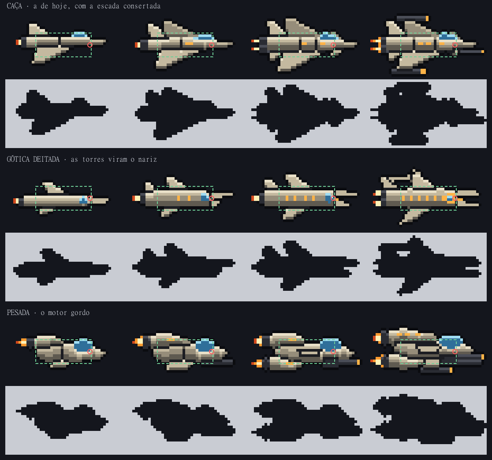
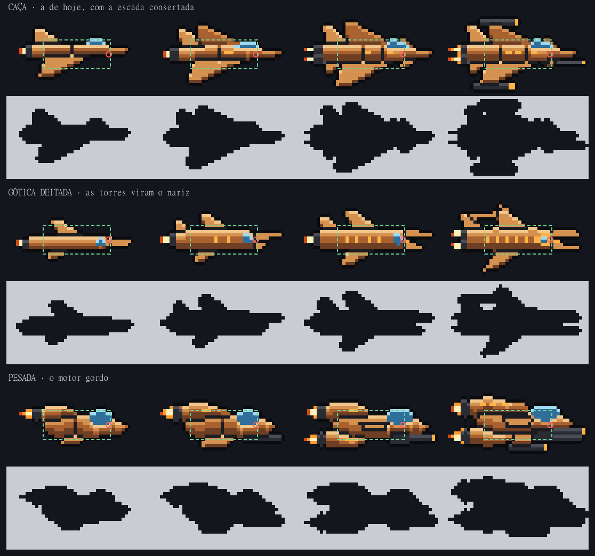
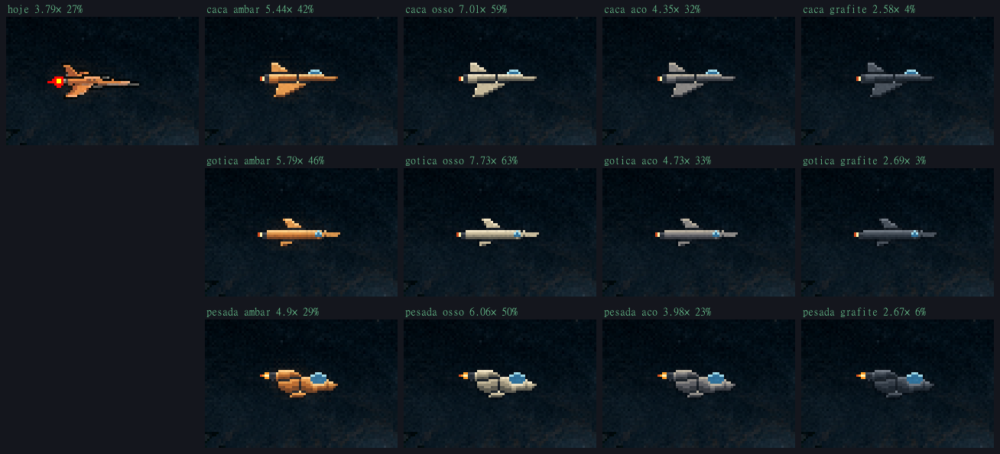
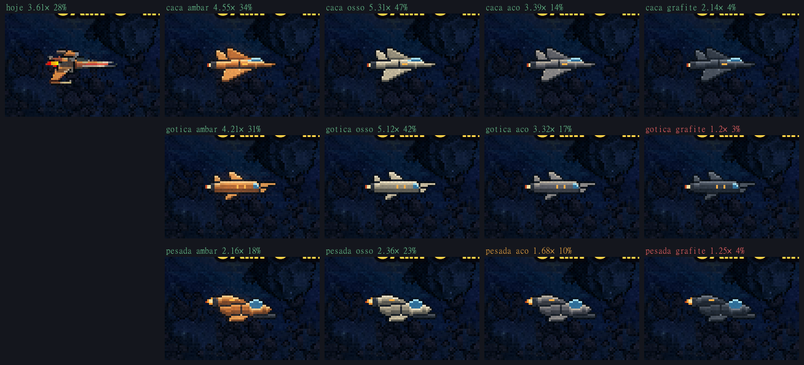
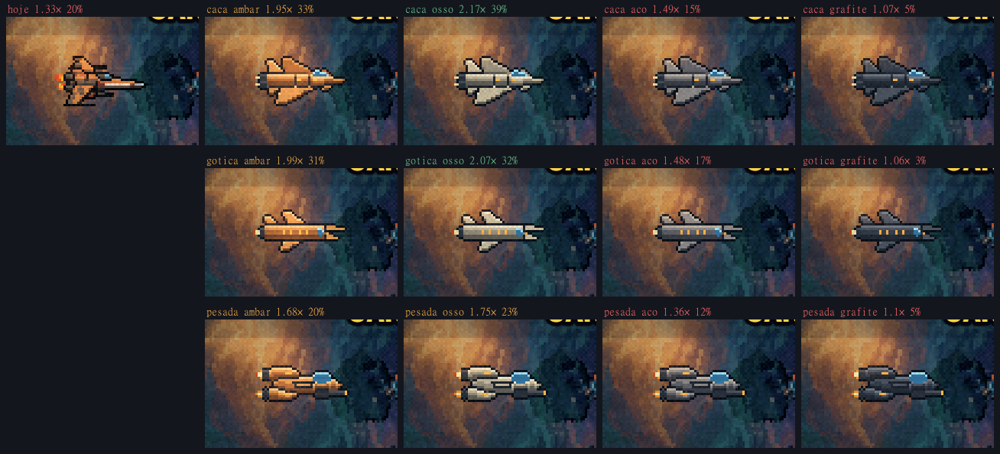
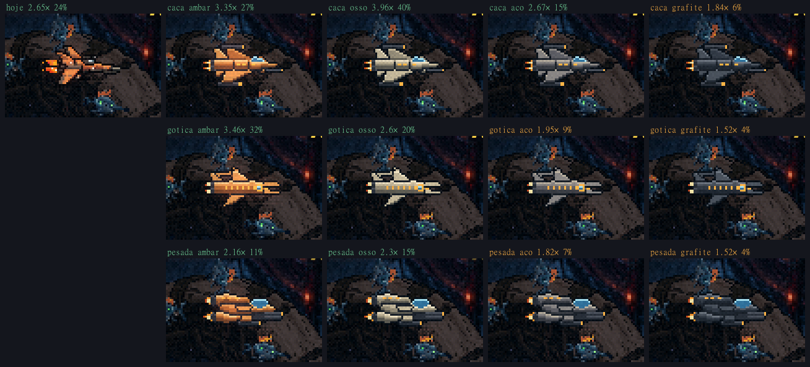
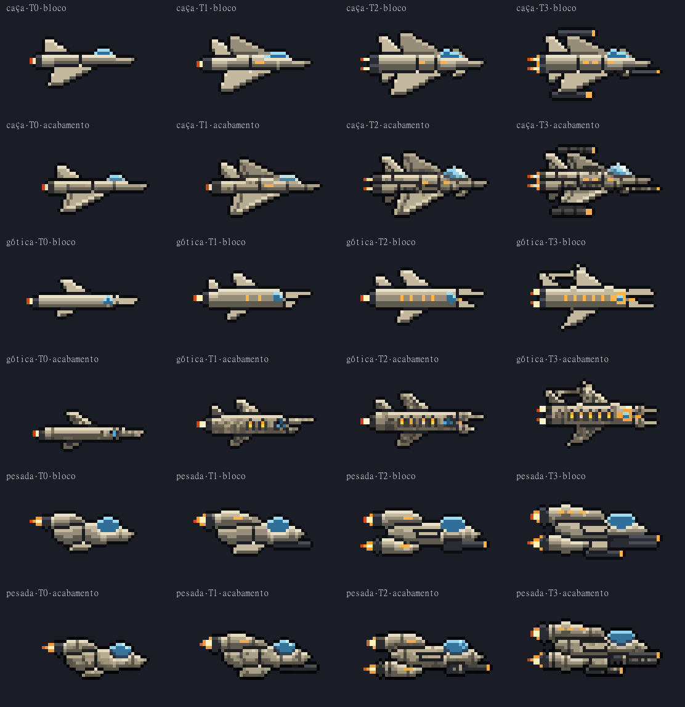

As naves · forma primeiro (rodada 2a)
23/10/2026 · ← o teste de detalhe (1c) · → ficou a de hoje: T0 menor, sem a T3 ·Você escolheu o caminho A: decidir a forma e o tom do casco antes do detalhe, com referências de naves conhecidas (só o princípio, nada copiado). Nada instalado; a hitbox (21×9) não muda.
Por que forma primeiro: nas duas rodadas que erraram, você julgou a nave pronta, com forma, cor e detalhe numa imagem só. Aqui cada coisa se decide sozinha: as naves estão em blocos de cor (casco em três tons, metal, vidro, luz âmbar, chama), desenhadas peça a peça no tamanho do jogo, sem PixelLab. O detalhe vem depois, pintado por cima da forma que você aprovar.
A régua (o que a nave do jogador precisa fazer, tirado do GDD e das fases):
- Se achar em meio segundo: contraste com o fundo em toda fase (pilar 3, leitura clara no escuro).
- Ler como flecha: nariz à frente, motor atrás, a cabine sobre a hitbox, e o tiro saindo do nariz.
- A conquista se vê na silhueta: cada tier ganha peça visível, e a T3 tem cara de prêmio.
- Ser da colônia: humano é ângulo, máquina e luz âmbar. Não pode lembrar inimigo nem a manta.
- Peso: motor, canhão e cabine de vidro à vista (a referência é o Metal Slug).
As três escadas

| Caça · a de hoje, escada consertada | Gótica deitada · as torres viram o nariz | Pesada · o motor gordo | |
|---|---|---|---|
| Ideia | A família de hoje (as asas grandes e enflechadas carregam a luz), com os dois defeitos dela corrigidos: a T1 volta para a família (hoje é o jato do róster antigo) e a T3 deixa de ser igual à T2. | A catedral deitada com as torres apontando para a frente: as torres são o nariz (uma, depois o garfo, e o tiro sai entre elas), a rosácea é o vidro da cabine, os arcobotantes são aletas varridas para trás, o motor é a abside. | Casco curto e grosso, cabine-bolha, motores como cápsulas e canhão à vista. Lê como máquina de guerra. |
| T0 | Uma asa grande, a deriva, nariz-agulha, um motor pequeno. Só a cabine acesa. | Capela: uma torre como nariz, a rosácea, uma aleta. | Rebocador: uma cápsula de motor em cima, atrás; cabine-bolha; asa curta. |
| T1 | A asa de lá aparece em cima; cabine e motor maiores; uma luz. | Igreja: o garfo começa (torre longa sobre uma curta); duas aletas; duas janelas. | O canhão sob o queixo; o motor cresce; a asa de lá; uma luz. |
| T2 | Motor duplo (duas chamas), canards no nariz, deriva dupla; duas luzes. | Abadia: o garfo inteiro (o tiro sai entre as torres); três aletas; motor maior; quatro janelas. | Duas cápsulas (em cima e embaixo); a metralhadora giratória com a caixa; uma placa de blindagem. |
| T3 | O prêmio: casulos de arma na ponta das duas asas, canhão sob o nariz, pós-combustão; três luzes. | Catedral: torres mais longas, o arcobotante fechando um arco vazado em cima, pináculos nas aletas, motor duplo, a rosácea com anel âmbar, seis janelas. | Dois motores grandes com chamas grandes, casulo de arma na asa, metralhadora mais pesada, respiros acesos. |
| Referências (só o princípio) | As suas T0/T2 de hoje (vista ¾, asas como planos de luz); a deriva dupla do F-14/Su-27; o nariz-agulha da Vic Viper (Gradius). | A fachada e a lateral de uma catedral gótica (torres, rosácea, arcobotantes, pináculos); os caças da Marinha Imperial de Warhammer 40k (gótico num caça horizontal); o nariz em garfo da Vic Viper e da R-9 (R-Type), de onde o tiro sai. | O Slug Flyer do Metal Slug (gordo, cabine grande, armas à vista); o A-10 (motores em cápsula no alto, atrás; o canhão no nariz); a R-9 (compacta, cabine-bolha). |

| Desenho (com contorno) | T0 | T1 | T2 | T3 |
|---|---|---|---|---|
| Hoje | 35×16 | 38×20 | 41×22 | 41×22 |
| Caça | 35×17 | 38×20 | 41×22 | 44×24 |
| Gótica | 37×14 | 39×17 | 41×19 | 41×23 |
| Pesada | 35×14 | 39×16 | 42×16 | 44×19 |
Os tamanhos ficaram perto dos de hoje, como você pediu ao recusar a 1b (detalhe custa pixel). A T3 da caça está no limite do quadro (44×24) e pode encolher um pouco no acabamento.
O tom do casco
Cada linha nos quatro tons, plantada no jogo de verdade, com o tratamento de imagem da fase por cima, no tier daquela fase (T0 na F1, T1 na F2, T2 na F3, T3 na F4). O número é o contraste entre a nave e o fundo logo em volta dela (1× = some no fundo), e a porcentagem é quanto da nave é claro. Verde ≥ 2×, laranja 1,5–2×, vermelho < 1,5×. Compare dentro da mesma fase: entre uma filmagem e outra o fundo se mexe.




| Tom | Contraste médio | Pior caso | Nave clara | Leitura |
|---|---|---|---|---|
| Osso (marfim sujo) | 4,0× | 1,75× | 38% | O que mais aparece em quase todo lugar. O "futuro usado" do Alien (1979): creme industrial, sujo, com luz âmbar. Perde só para o âmbar na gótica da F4, onde a rocha é marrom-acinzentada. |
| Âmbar (o de hoje) | 3,5× | 1,7× | 30% | Quase tão bom, e já é a identidade da nave. Na F3 encosta na nebulosa laranja. |
| Aço quente | 2,7× | 1,4× | 17% | O meio-termo dark sci-fi. Cai abaixo de 1,5× na F3 em todas as linhas, e na pesada também na F2. |
| Grafite (o da 1b e da 1c) | 1,7× | 1,06× | 4% | Some em quase toda fase, e na F3 tem o mesmo brilho do fundo. Foi o que deixou a 1b e a 1c "aquém". |
| Hoje (para comparar) | 2,8× | 1,3× | 25% | A de hoje, no mesmo quadro. |
Prévia do acabamento

Isto não é o acabamento final. Serve para mostrar que a forma aguenta o detalhe: o PixelLab manteve a silhueta e somou painéis, placas, sujeira e o brilho do vidro. O acabamento de verdade vem na rodada 2b, só na linha e no tom que você escolher, com o detalhe das naves de hoje como referência, retoque à mão e a chama animada.
A prévia da gótica foi feita com a T3 um pixel mais curta nas torres (alonguei depois, para a T3 ficar mais comprida que a T2).
Como saiu
- Os blocos:
scripts/_naves/_silhuetas.mjsdesenha cada nave a partir de uma lista de peças (silhuetas-linhas.mjs): cada tier é o de baixo mais peças. Sombreamento de cima, costura onde uma placa cobre outra, contorno por fora, centrado no quadro 44×26 como toda nave do jogo. Zero gerações. - O jogo: as naves plantadas no lugar da sua, no quadro real da fase; o contraste é medido contra o mesmo quadro sem nave (
_contraste-jogo.mjs). - A prévia:
_acabamento-previa.mjs,/edit-images-v2com as quatro de uma linha juntas. 2 sementes por linha, a melhor na folha: 60 gerações. As outras emnaves/cru/silhuetas/.
O que você decide
- A linha: caça, gótica ou pesada, ou uma mistura (por exemplo, a caça com o nariz em garfo da gótica, ou a pesada com as aletas góticas).
- O tom do casco: osso (o que mais aparece), âmbar (o de hoje), ou outro. O aço e o grafite ficam abaixo da régua.
- A escada: se algum degrau deve mudar (por exemplo, a T3 da caça um pouco menor, ou uma peça trocada de tier).
Depois: a rodada 2b pinta o detalhe sobre a forma escolhida, depois vêm os retoques, a chama animada (com a azul da carta Propulsores) e a instalação no jogo. As mantas menores vêm em seguida.